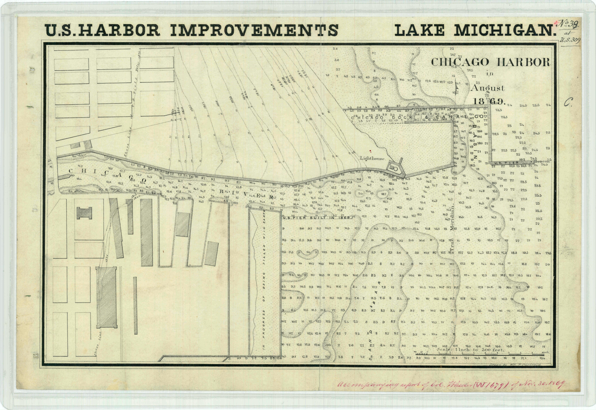

Ashland / Reuben
Four original picks lay 22–28.5 pixels west of the intended street centre, in a neighboring street or block. The street opening was read again between its two printed edges.
Geography & accuracy · Research update
The right streets, banks and shoreline are the foundation of the city. This audit shows where the map is tied to the ground, which readings changed, and what the measurements can—and cannot—tell us.
Scene date: , before the Great Fire. Audit dated . The city remains a reconstructed baseline; a better map fit does not identify every property.
Download the audit and all 36 controls ↓ · 1871 dossier · Primary-source field notebook
A correction to the first city baseline
The initial registration had picked the wrong printed line at several controls. The modern coordinate system was consistent; the historical map pixels needed correcting.
Four original picks lay 22–28.5 pixels west of the intended street centre, in a neighboring street or block. The street opening was read again between its two printed edges.
Four Halsted picks lay 6.5–10 pixels west, with street-edge and rail-line confusion. At State and Thirty-first, the original pick followed the nearby border rather than the roadway centre.
Western at Fullerton has a modern crossing, but the map’s ornamental frame obscures the street opening. It is excluded instead of assigning a precise-looking map pixel.
Fourteen original control locations were re-read, and 22 additional intersections were accepted. Of the resulting 36, 28 determine the fitted map. Eight spatially distributed intersections were set aside before model selection and remain independent checks; they do not pull the published map into position.
Street intersections read on the actual scan
Excluded from fitting and model selection
Previously 49.97 m at these same eight locations
A measured result, not a citywide maximum
RMS is the square root of the mean squared horizontal error. It describes these measurements; it is neither a guaranteed distance nor a confidence interval for every point in Chicago.
Read the source and the test together
Blue circles are the 28 fitted controls. Rust squares are the eight reserved checks. The numbers match the table below. Enlarge the original scan and scroll to inspect individual street openings; selecting a marker takes you to its recorded residual.
Inspect the retained water, park and crossing readings on the original map → This full-resolution overlay shows source-pixel centrelines, shoreline and lagoon edges, park outlines and 22 crossing points: 21 report-tabulated bridges plus the separately map-attested Division canal crossing. River widths and outer extensions without retained pixels are omitted; these generalized readings are not surveyed banks.
| Map no. | Intersection | Role | Residual |
|---|---|---|---|
| 1 | State Street x Madison Street | Fit | 22.57 m |
| 2 | State Street x Cermak Road (Twenty-Second Street) | Fit | 11.81 m |
| 3 | State Street x Roosevelt Road (Twelfth Street) | Fit | 20.06 m |
| 4 | State Street x Thirty-First Street | Fit | 39.63 m |
| 5 | Halsted Street x Madison Street | Fit | 7.81 m |
| 6 | Halsted Street x Cermak Road (Twenty-Second Street) | Fit | 14.51 m |
| 7 | Halsted Street x Roosevelt Road (Twelfth Street) | Fit | 24.86 m |
| 8 | Halsted Street x North Avenue | Fit | 12.99 m |
| 9 | Western Avenue x Madison Street | Fit | 15.32 m |
| 10 | Western Avenue x Roosevelt Road (Twelfth Street) | Fit | 36.97 m |
| 11 | Ashland Avenue x Chicago Avenue | Fit | 7.64 m |
| 12 | Ashland Avenue x Madison Street | Fit | 11.69 m |
| 13 | Ashland Avenue x Roosevelt Road (Twelfth Street) | Fit | 30.33 m |
| 14 | Ashland Avenue x North Avenue | Fit | 4.32 m |
| 15 | Ashland Avenue x Fullerton Avenue | Check | 12.10 m |
| 16 | Halsted Street x Fullerton Avenue | Fit | 8.17 m |
| 17 | Western Avenue x North Avenue | Check | 9.69 m |
| 18 | Western Avenue x Division Street | Fit | 9.72 m |
| 19 | Ashland Avenue x Division Street | Fit | 6.81 m |
| 20 | Halsted Street x Division Street | Check | 14.65 m |
| 21 | Western Avenue x Chicago Avenue | Fit | 12.57 m |
| 22 | State Street x Chicago Avenue | Check | 22.80 m |
| 23 | Ashland Avenue x 16th Street | Check | 25.65 m |
| 24 | Halsted Street x 16th Street | Fit | 17.16 m |
| 25 | State Street x 16th Street | Fit | 19.47 m |
| 26 | Halsted Street x 31st Street | Fit | 25.21 m |
| 27 | Western Avenue x Cermak Road | Check | 15.73 m |
| 28 | Ashland Avenue x Cermak Road | Fit | 31.03 m |
| 29 | LaSalle Street x Lake Street | Check | 2.95 m |
| 30 | LaSalle Street x Randolph Street | Fit | 8.12 m |
| 31 | LaSalle Street x Washington Street | Fit | 10.62 m |
| 32 | LaSalle Street x Madison Street | Fit | 7.90 m |
| 33 | Clark Street x Madison Street | Check | 7.92 m |
| 34 | Wells Street x Madison Street | Fit | 13.20 m |
| 35 | Clark Street x Lake Street | Fit | 6.82 m |
| 36 | Wells Street x Randolph Street | Fit | 15.63 m |
Modern road controls are candidates for historical continuity, not proof that every centreline remained fixed. The original fourteen retain their recorded averaging provenance. New OSM targets retain actual shared roadway node IDs and exclude cycleways, service roads, tunnels and proposed or construction geometry.
Different questions need different error measures
| Measure | Result | Meaning |
|---|---|---|
| Fit residual, 28 controls | 18.67 m RMS | Agreement at the points used to calculate the transform. This is in-sample fit. |
| Reserved checks, 8 controls | 15.62 m RMS 25.65 m maximum | Independent performance at eight identified intersections. They were not used to select or fit the shipped model. |
| Leave-one-out development check | 21.49 m RMS | Each development point is predicted from the other 27. Useful sensitivity testing, distinct from the eight untouched checks. |
| Registration allowance | About 30 m | A working allowance for locating broad mapped features. It is not a statistical confidence interval or a guaranteed upper bound. |
| Generalized map lines and banks | 40–80 m | A provisional working allowance for engraving, line selection and generalized geometry, separate from registration. Not a measured confidence interval. |
| Outskirts beyond the map | 150–300 m or greater | A working allowance for reconstructed continuations beyond the sheet. Independent historical control is still needed there. |
| Heights, lake stage and bank profile | No accuracy inferred | Horizontal map registration supplies no street elevation, bridge-deck level, water stage or underwater bank slope. |
The chosen transform is affine: one consistent translation, rotation, scale and shear across the sheet. Projective, quadratic and thin-plate-spline alternatives were compared using geographically withheld districts within the development set. Extra flexibility improved some training fits but behaved worse when predicting a district left out of fitting. The eight final checks were kept out of that choice.
These error components are not simply added into a single “accuracy” number. A well-registered printed riverbank can still show the wrong date, a generalized quay edge or a waterline at another lake level.
Modern targets are projected to NAD83 / UTM zone 16N (EPSG:26916), in metres. The local scene subtracts easting 447072.7 and northing 4637395.8. The 3D export uses east as x, north as −z and height as y.
All fourteen original control coordinates reproduce from their stored latitude and longitude within 0.0055 m of rounding. This rules out an origin or axis mismatch in those recorded targets; it does not certify their historical alignment or OSM survey accuracy. Only modern target coordinates were reused from earlier work, not the 1849 map’s pixels, transform or banks.
At State and Madison, the earlier record’s four pairwise road intersections reduce to one distinct shared OSM node at the same coordinate. Counts of way-pair crossings must not be mistaken for counts of independent observations. Cermak’s earlier averaging remains a separate limitation.
More detailed evidence, with a different date
A federal engineering sheet has now been acquired and read: Chicago Harbor in August 1869, at one inch to 300 feet (1:3,600). That is about 8.6 times the linear map scale of Mitchell’s city map. It offers much finer drawn detail at the river mouth; scale alone does not establish ground accuracy.

River-mouth banks, the north dock basin, the lighthouse enclosure, Illinois Central slips and buildings, soundings, a south pier labeled “built in 1869,” and ground explicitly described as being filled.
Later cribwork is documented: 29 breakwater cribs were placed in 1870 and spring 1871. Their exact alignment and above-water completion still need reconciliation. Fill, docks and dredging also changed the harbor after the survey.
Eight bank, shore and pier traces are now recorded in image space and relative metres from the printed scale. Absolute alignment remains pending: historical street controls and independent checks are still required before they define an 1871 shoreline.
The fill enclosure is not the dry shoreline. The Illinois Central outer enclosure and the irregular interior waterline are traced as separate features. The sheet says filling was in progress, so treating the whole enclosed area as finished dry land would erase the distinction the source draws.
The February 1870 federal report describes a July–August 1869 harbor survey and a larger tracing at 400 feet to the inch. It also distinguishes proposed outer-harbor works. The March 1871 contract return records 800 feet of breakwater, stone-filled timber cribs and dredging under contract, with a November 1871 expiration. A later progress report supplies evidence of actual construction.
Pre-fire cribwork is documented. The Report of the Chief of Engineers, 1871, printed pages 35 and 117, records 23 cribs placed in 1870 and six more in spring 1871: 29 cribs totaling 1,450 feet, including a 300-foot westward return. The report is dated 20 October 1871, after the fire, but its fiscal-year account ends 30 June and explicitly places this work in 1870 and spring 1871. This supports the earlier cribwork; it does not date every later progress statement to the scene.
The above-water superstructure remains less certain. The summary mentions about 200 feet; Appendix A16 reports 1,000 feet of six-foot-high superstructure “at the writing of this report.” Those reporting states need reconciliation before assigning an exact completed length on 8 October. A further 900-foot extension and completion by June 1872 are projections, and are excluded from the pre-fire completed-work claim. The documentary lengths also do not locate the breakwater in the city coordinate system.
A 1865 harbor survey and a 1872 U.S. Lake Survey map provide additional comparisons. The latter was published after the fire, and its inspected title does not establish when each feature was surveyed. Its sounding reference is a historical Milwaukee grade plane, not automatically the simulation’s water-level datum.
Dates, provenance and useful limits
Three harbor/city survey sheets were visually inspected in this pass, and three federal reports were read in part. A catalog entry, an acquired image, a registered map and an accepted 1871 terrain feature are separate stages of evidence.
1870
City grid, river branches, railway corridors and broad shoreline. Approximately 1:31,000; a reference map, not a parcel survey.
Public domain; University of Illinois Map and Geography Library, via Wikimedia Commons.
1869-08 as printed on the sheet
Local river-mouth engineering detail, docks, piers, soundings and fill in progress. 1 inch to 300 feet (1:3,600). Registration and October 1871 completion checks remain separate work.
Date discrepancy: NARA catalog/filename says October 1868 / Sheet 38; actual image says August 1869 and manuscript No.39. The image date is retained without concealing the catalog discrepancy.
Public domain federal government work; NARA/DPLA/Wikimedia Commons.
1865-07 to 1865-09
Earlier surveyed harbor and lakefront, with named streets and several older shoreline dates. Useful for change detection, not an October 1871 shoreline by itself.
Public domain federal government work; NARA/Wikimedia Commons.
Published 1872; underlying survey dates not established by the inspected title
Post-fire comparison with a stated trigonometrical/local-survey basis. Survey epoch and historical datum must be reconciled before pre-fire use.
Public domain; NOAA Office of Coast Survey Historical Map & Chart Collection. Not for navigation.
1870-02-07
Printed pp.1–6 inspected. Page 2 describes a July–August 1869 survey and tracing W at 400 feet/inch; page 4 distinguishes proposed outer-harbor works. Referenced large tracing not included in the downloaded eight-page report.
Public domain United States Government publication.
1871-03-15
Printed p.3 records the 1870 Fox & Howard contract for 800 feet of Chicago breakwater, stone-filled timber cribs and dredging, expiring 30 November 1871. A contract is not a completion measurement for 8 October.
Public domain United States Government publication.
Main report dated 20 October 1871; Houston appendix covers the year ending 30 June 1871
Printed pp. 35 and 117 document 23 cribs placed in 1870 and six in spring 1871: 29 cribs / 1,450 feet, including a 300-foot west return. The compiled report is post-fire; these earlier works are explicitly dated. The 200-foot versus 1,000-foot superstructure reports remain unresolved for 8 October. A projected 900-foot extension is not counted as completed work.
Public domain federal government publication; USACE Digital Library.
1869-04-09
Municipal extent and ward context. Newspaper graphic date and the modern page title are kept distinct; the historic graphic, rather than a modern summary table, supplies the boundary reading.
Original 1869 newspaper graphic public domain; modern host text is not copied as an asset.
Municipal year ending 31 March 1871
Street, sidewalk, sewer and bridge work with reporting dates. It does not cover every change through 8 October 1871. See the field notebook for individual pages.
Public domain original municipal report and faithful scan.
From a city baseline to specific places
The 8 October cutoff also requires earlier damage to be reconciled, including the Saturday Night Fire. A record listed in 1871 is not automatically standing and occupied at the scene’s exact hour. The field notebook keeps people, materials and actions tied to their own source dates.
The linked repository files are the active research records. This page’s dated audit download keeps the measurements and control positions used for this edition.